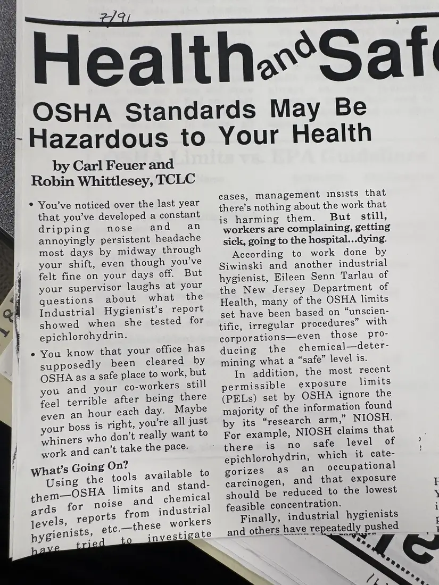
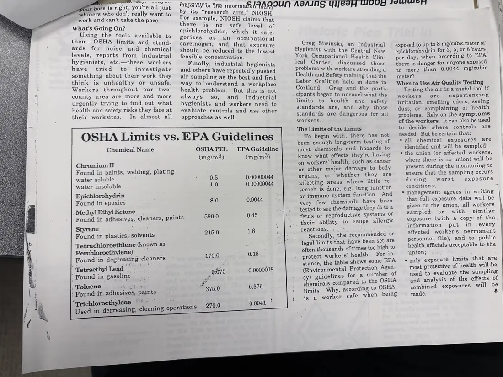

Newsletter, 2 pages
“OSHA Standards May Be Hazardous to Your Health”
[July 1991]Date inferred
A Health and Safety page article arguing that many OSHA exposure limits are outdated and too high, comparing them with NIOSH and EPA guidance, with a table comparing OSHA limits and EPA guidelines for common industrial chemicals.
The date is handwritten on the page.
Download or cite this itemPages


(open zoom view)Read the page text (machine-read, mostly readable)
This text was generated automatically from the photograph and has not been corrected. The image is the authoritative record.
+ ee by Carl Feuer and Robin Whittlesey, TCLC ¢ You’ve noticed over the last year that you’ve developed a constant dripping mose and an annoyingly persistent headache most days by midway through your shift, even though you’ve felt fine on your days off. But your supervisor laughs at your questions about what the Industrial Hygienist’s report showed when she tested for epichlorohydrin. e You know that your office has supposedly been cleared by OSHA as a safe place to work, but ou and your co-workers still feel terrible after being there even an hour each day. Maybe your boss is right, youre all just whiners who don’t really want to work and can’t take the pace. what’s Going On? Using the tools available to them—OSHA limits and stand- ards for noise and ohemies jevels, reports oe nea ienl etc.—these pygienists, a : vestigate Health.“Saf |» OSHA Standards May Be |; Hazardous to Your Health cases, Management insists that there’s nothing about the work that is harming them. But still, workers are complaining, getting sick, going to the hospital...dying. According to work done by Siwinski and another industrial hygienist, Eileen Senn Tarlau of the New Jersey Department of Health, many of the OSHA limits set have been based on “unscien- tific, irregular procedures” with corporations—even those pro- ducing the chemical—deter- mining what a “safe” level is. In addition, the most recent permissible exposure limits (PELs) set by OSHA ignore the majority of the information found by its “research arm,” NIOSH. For example, NIOSH claims that therewiis mo sate level of epichlorohydrin, which it cate- gorizes as @n occupational carcinogen, and that exposure should be reduced to the lowest feasible concentration. Finally, industrial hygienists and others have repeatedly pushed


(open zoom view)Read the page text (machine-read, mostly readable)
This text was generated automatically from the photograph and has not been corrected. The image is the authoritative record.
What’s Going On? Using the tools levels, have tried to their worksites. Used in degreasing, ir boss is right, you're all just whiners who don’t really want to work and can’t take the pace. them—OSHA limits and stand- ards for noise and reports from hygienists, etc.—these workers something about their work they think is unhealthy or unsafe. Workers throughout our two- county area are more and more urgently trying to find out what health and safety risks they face at In almost all OSHA Limits vs. EPA Guidelines re nes by its “research arm,” NIOSH For example, NIOSH claims that there is no safe level of epichlorohydrin, which it cate- gorizes as an occupational carcinogen, and that ex should be reduced to the ‘1o@bsy feasible concentration. Finally, industrial hygienists and others have repeatedly pushed air sampling as the best and first way to understand a workplace health problem. But this is not always so, and_ industrial hygienists and workers need to evaluate controls and use other approaches as well. available to chemical industrial investigate Chemical Name OSHAPEL EPA Guideline (mg/m3) (mg/m3) Chromium II Found in paints, welding, plating water soluble : 0.5 0.00000044 water insoluble 1.0 0.00000044 Epichlorohydrin Found in epoxies 8.0 0.0044 Methyl] Ethyl Ketone Z Found in adhesives, cleaners, paints 590.0 0.45 Styrene ane : \ Found in plastics,-solvents 215.0 18 ve Tetrachloroethlene (known as : Perchloroethylene) Sas Found in degreasing cleaners 170.0 ; ‘‘TetraethylLead) Be : Found in gasoline 80 0.0000018 . Toluene eiaees? ea ’ Found in adhesives, paints 375.0 0.376 “qTyichloroethylene ~*~ © es cleaning operations 270.0 0.0041 Greg Siwinski, an Industrial Hygienist with the Central New York Occupational Health Clin- ical Center, discussed these problems with workers attending a Health and Safety training that the Labor Coalition held in June in Cortland. Greg and the parti- . cipants began to unravel what the limits to health and safety standards are, and why those standards are dangerous for all workers. The Limits of the Limits To begin with, there has not been enough long-term testing of most chemicals and hazards to know what effects they’re having on workers’ health, such as cancer or other major damage to body organs, or whether they are affecting areas where little re- search is done, e.g. lung function or immune system function. And very few chemicals have been tested to see the damage they do toa fetus or reproductive systems or _their ability to cause allergic TCACLIONS a = ; Secondly, the recommended or legal limits that have been set are often thousands of times too high to protect workers’ health. For in- stance, the table shows some EPA (Environmental Protection Agen- cy) guidelines for a number of chemicals compared to the OSHA limits. Why, according to OSHA, is a worker safe when being MEPS dt We intormagotAQIUN AGAING YYEIH WOCG Aor | exposed to up to 8 mg/cubic meter of epichlorohydrin for 2, 5, or 8 hours _ per day, when according to EPA there is danger for anyone exposed to more than 0.0044 mg/cubic meter? When to Use Air Quality Testing Testing the air is a useful tool if workers are experiencing irritation, smelling odors, seeing dust, or complaining of health problems. Rely on the symptoms of the workers. It can also be used to decide where controls are needed. But be certain that: * all chemical exposures are identified and will be sampled; * the union (or affected workers, where there is no union) will be present during the monitoring to ensure that the sampling occurs during worst exposure conditions; ~ management agrees in writing that full exposure data will be given to the union, all workers sampled. or -with similar exposure (with a copy of the information put in -every affected worker’s permanent personnel file), and to public health officials acceptable to. the union; 5 only exposure limits that are most protective of health will be used to evaluate the sampling and analysis of the effects of combined exposures will be made. tC)
See something wrong, or recognize a person or event? Send a correction. If you hold rights in this item or think it should not be public, write to the same address.